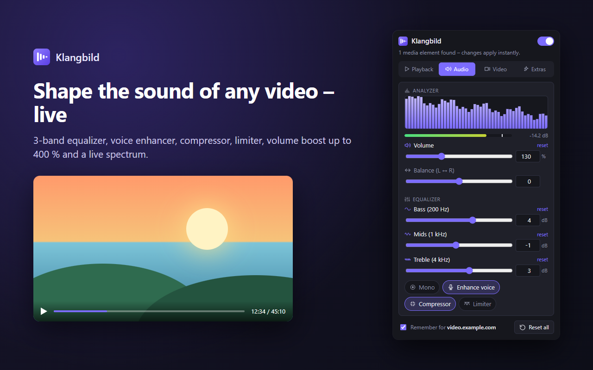
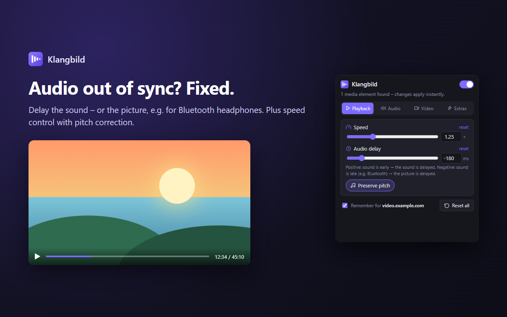
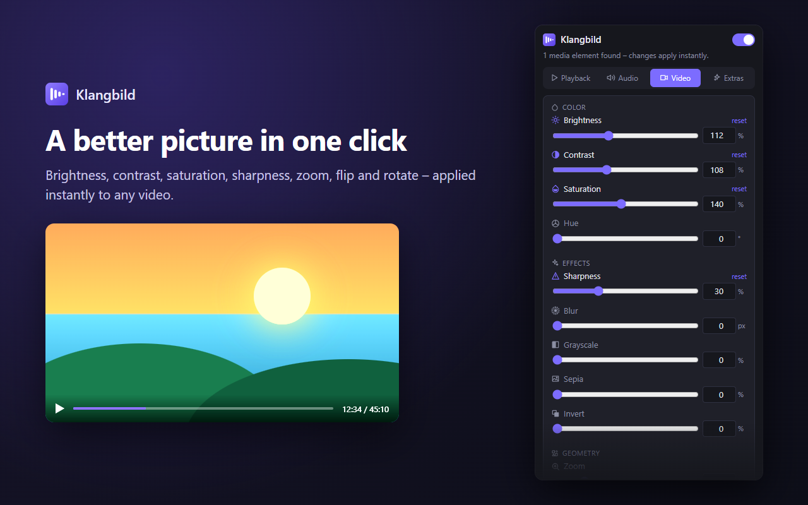
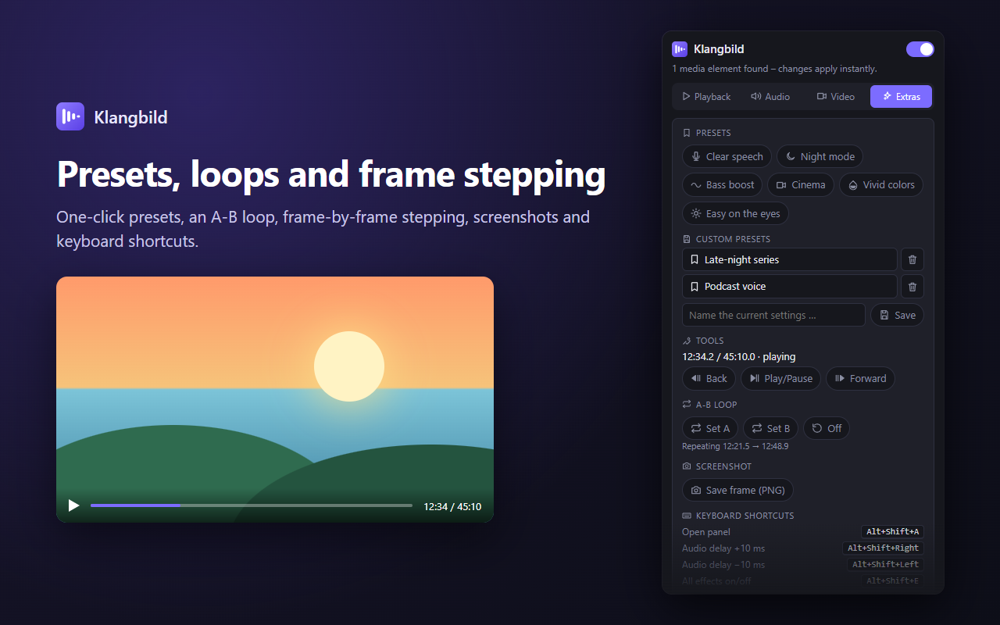

Fix out-of-sync audio, boost the volume, enhance voices, tune the equalizer, sharpen and color-correct videos. Works on YouTube, Twitch, media libraries, podcasts and embedded players.

One panel in your toolbar controls whatever video or audio is playing in the tab – changes apply instantly.
The real panel, as it appears in your browser toolbar.



Every change is briefly shown on top of the video. Shortcuts can be changed in your browser’s extension settings.
| Alt+Shift+A | Open panel |
| Alt+Shift+↑ / ↓ | Speed ±0.25× |
| Alt+Shift+→ / ← | Audio delay ±10 ms |
| Alt+Shift+E | All effects on/off |
| Alt+Shift+L | A-B loop |
| Alt+Shift+S | Save screenshot |
Copy-protected streams such as Prime Video, Netflix or Disney+ don’t release their audio and picture to extensions. There, speed, picture filters, loop and frame stepping work, but audio effects, the picture delay and screenshots don’t. The system audio analyzer can still show their spectrum.
Klangbild needs access to all websites because video and audio players can live on any site and inside embedded frames. It only changes how media plays.
No account, no analytics, no ads, no network requests. Your settings and presets stay in your browser. Read the privacy policy.